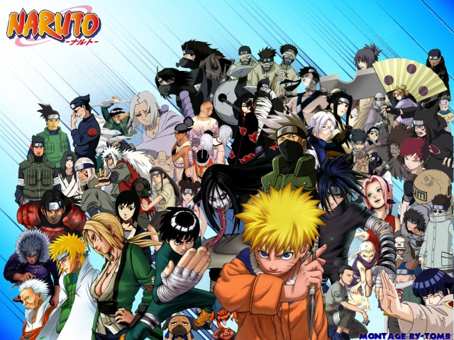
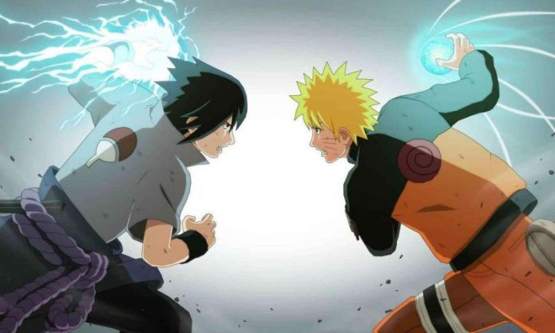
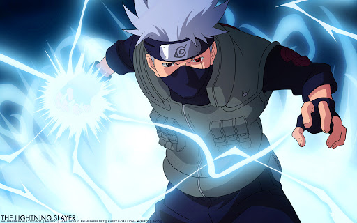

«Наруто» (яп. NARUTO - ナルト -) — манга Масаси Кисимото в жанре сёнэн. Главным её героем является Наруто Удзумаки, шумный и непоседливый ниндзя-подросток, который мечтает достичь всеобщего признания и стать Хокагэ — главой своего селения и сильнейшим ниндзя. Чтобы добиться уважения окружающих, ему предстоит пройти через тысячи препятствий: экзамены ниндзя, различные миссии и сражения.
 Все персонажи очень хороши, у всех есть предыстория и нам отчетливо показывают, что люди злыми не рождаются, просто жизненные трудности заставляют персонажей сходить с пути. У меня много любимых персонажей: Итачи, Минато, Наруто, Саске, Гарра.
Главного персонажа зовут Наруто, не особо умный, но зато целеустремленный и никогда не сворачивает с своего пути ниндзя, с мечтой стать хокаги. Многие персонажи нашли свое предназначение в жизни после встречи с Наруто.
Больше всего конечно нравиться Итачи, по моей логики самая трудная судьба досталась ему, убить родителей, клан ради мира и жить предателем, в глазах деревни и любимого младшего брата. Жил ради того, чтобы передать свои глаза и величие клана, младшему брату.
IQ Шикамару — выше 200. Для сравнения, у Билла Гейтса, по слухам, в районе 170.
Всесильное трио Джирайи, Цунаде и Орочимару — это отсылка к роману 19 века, "Песнь о герое Джирайя".
 Главный герой серии, подросток Наруто Удзумаки, является носителем девятихвостого демона-лиса, запечатанного в его теле. За двенадцать лет до начала событий, излагаемых в манге, демон-лис напал на Деревню, скрытую в листве, родную деревню Наруто. Ради спасения Конохи Четвёртый Хокагэ, глава селения, пожертвовал жизнью, чтобы запечатать дух зверя внутри своего новорождённого сына Наруто.
Хокагэ желал, чтобы люди считали Наруто героем, поскольку отныне он сдерживал мощь девятихвостого лиса, однако население деревни восприняло Наруто как демона во плоти и возненавидело его. Поскольку упоминать об атаке лиса было запрещено, Наруто узнал о своей необычности лишь случайно, годы спустя.
Очень интересный сюжет с хвостатыми демонами чакры, множество интересных боев, видели бои учеников одного учителя, кровных братьев, лучших друзей, были даже битвы между поколениями.
 Понравилось разновидностью способностей, которые передаются в внутри клана или основанных на элементах стихий, улучшенных и расширенных геномов, людей с демонами в внутри (джинчурики) или обладателей энергией природы
Во время четвертой мировой войны Кабуто смог призвать сильнейших шиноби своего времени, в его исполнении призванные обладали такой же силой что и при жизни, бонусом неисчерпаемый запас чакры.
Некоторые ниндзя имели возможность объединений двух стихии для создания нового, который даже шаринган не сможет с копировать, типо элемента дерева первого хокаги Хаширамы Сенджу, Хаку с элемнтом льда, 5 мизукаге с 2-я улучшенными геномами лавы и пара
{kind=link}